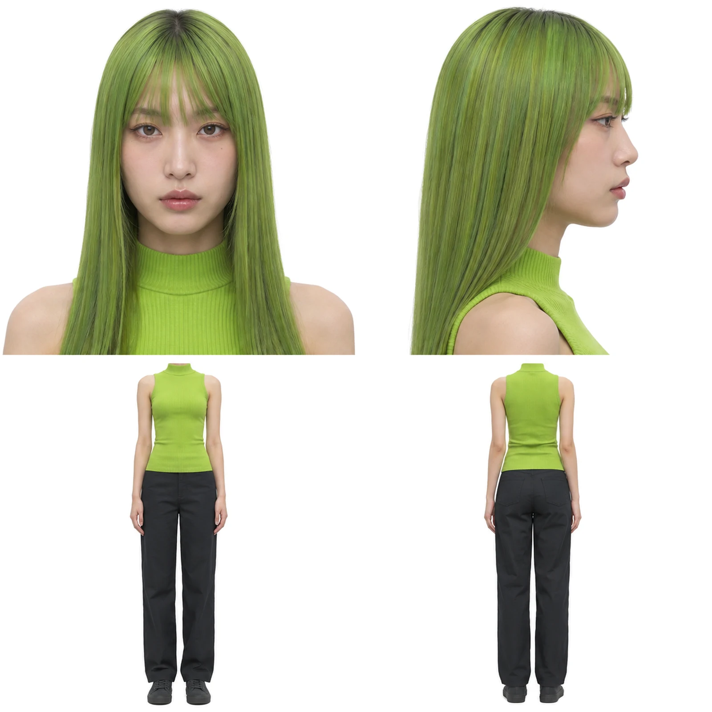
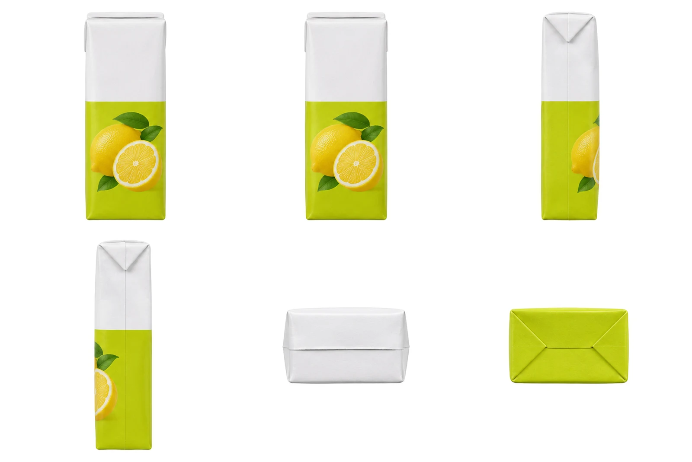
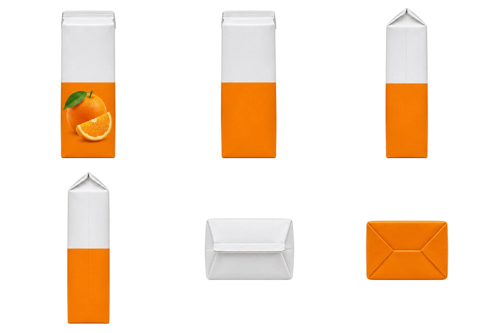
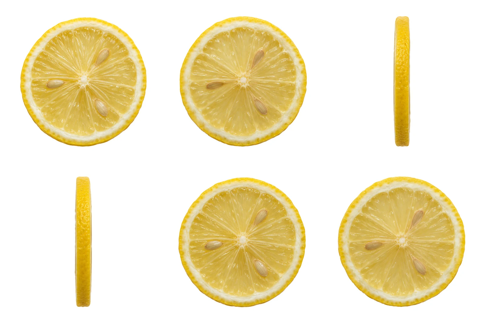
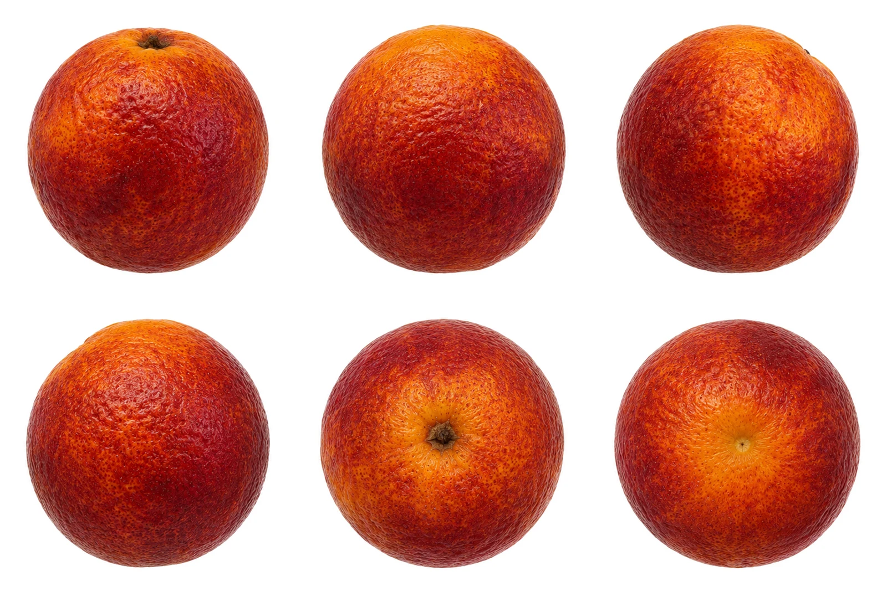
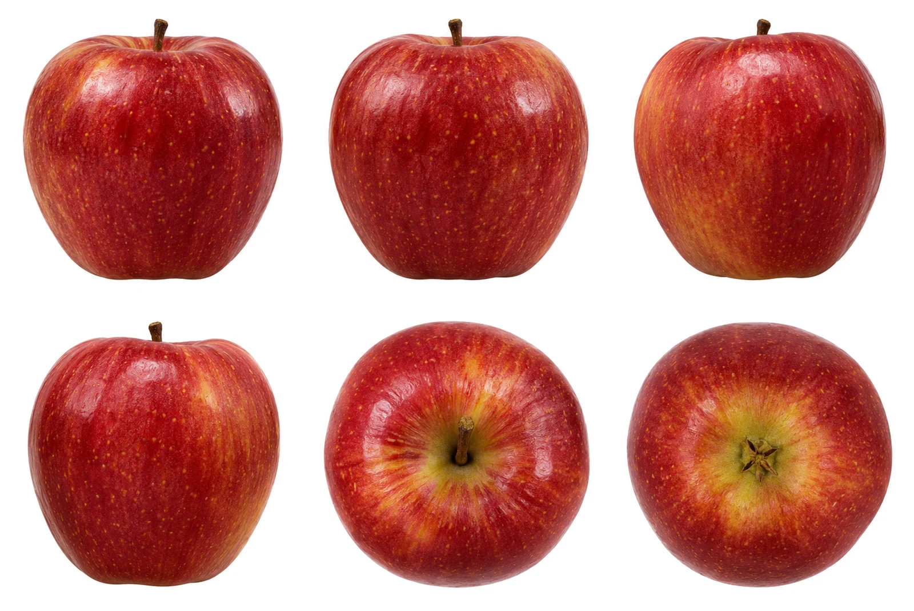
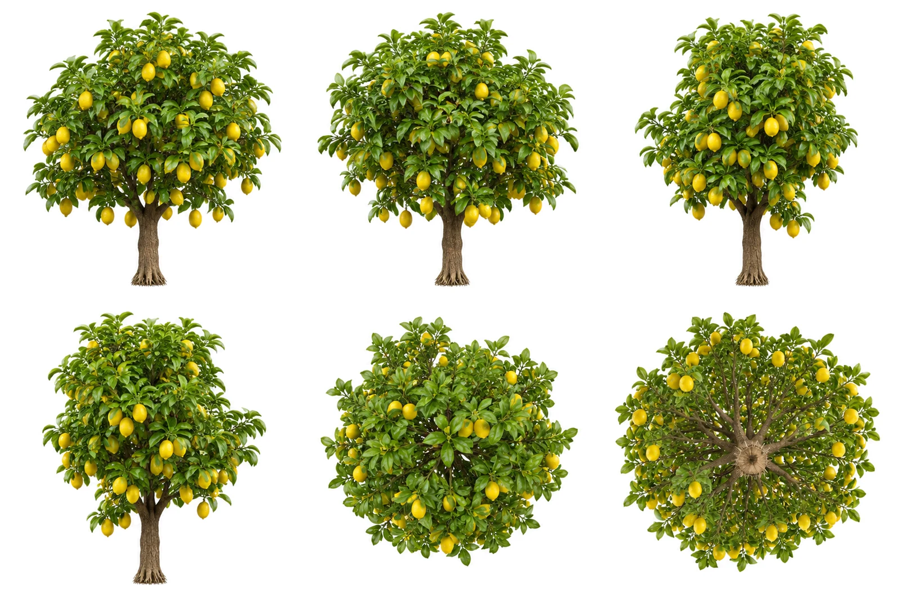
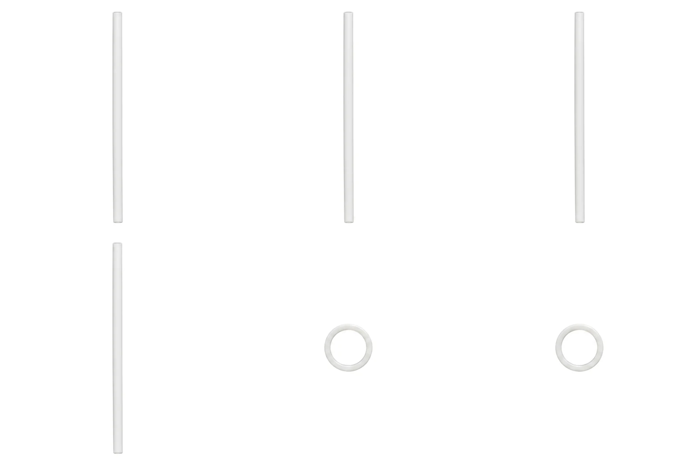

嚼，柠檬
剧本与分镜
完整剧本与分镜脚本
下载原文带货种草 · 嚼，柠檬 原片时长 39.00 秒 故事梗概 绿发女主站在人流穿梭的夜街，一吸柠檬饮料，城市换上明亮果色。柠檬、橙子、红苹果在高楼间以巨物尺度出现，引出三个色系的盒装饮品。结尾商品集中并给柠檬口味正面定格。 人物 绿发女主既是试饮者也是结尾展示者。街头人群只承担动态背景，复拍用不具名群演。 场景 夜间都市十字路口负责建立节奏；金黄色大道负责色调切换；高楼峡谷街区承载巨型果实和多包装结尾。 道具用途 三款无字包装保持同一盒型。圆片在面部近景前穿插，整果按同一几何放大。交通道具用于动势，白吸管用于入口动作。 剧本与分镜 按原片抽帧重建的复拍制作稿。画面未能确认的对白、音效与镜头节奏按下表执行。 | 镜号 | 画面内容 | 镜头视角 | 使用资产 | 动作描述 | 台词/旁白 | 音效 | 单镜头时长 | | 01 | 女主停在夜街人流中，红车从面前过 | 平视中景与贴街运动镜头 | 绿发女主、夜间都市十字路口、红色轿车 | 利用遮挡同方向快速擦切 | — | 汽车掠过、街头人声 | 4.00秒 | | 02 | 斑马线上的女主转身 | 高位广角轻旋 | 绿发女主、夜间都市十字路口 | 女主抬手，在画面中央定住 | — | 节拍抬升 | 3.00秒 | | 03 | 柠檬片掠过脸和盒饮 | 正面产品及人脸近景 | 绿发女主、柠檬饮料方盒、切面柠檬片 | 切片前后交错，露出眼部和包装 | — | 果片轻切声 | 3.00秒 | | 04 | 她吸一口，环境转日光 | 唇部特写转树下侧近景 | 白色直吸管、柠檬饮料方盒、绿发女主 | 闭眼喝下，顺同一位置切到日间 | — | 吸饮、环境音突变 | 4.50秒 | | 05 | 大片城市道路变金黄 | 车侧跟拍转道路中轴全景 | 日间金黄色大道、黄色城市出租车 | 以黄色车辆匹配下一镜头的树冠 | — | 胎声、轻快节拍 | 3.50秒 | | 06 | 柠檬树挂盒，巨柠檬升高 | 枝头近景转仰拍 | 柠檬树、柠檬饮料方盒、柠檬 | 包装从树间露出，巨柠檬升到楼顶上方 | — | 叶响、轻跃音 | 3.00秒 | | 07 | 橙子经过摩天楼并切成橙色包装 | 高空俯拍接手持产品近景 | 橙子、高楼峡谷街区、橙味饮料方盒 | 果实过画面中轴，接相同色块的盒身 | — | 高空风、色彩切换节拍 | 6.00秒 | | 08 | 巨苹果在大道尽头逼近，粉色盒列出现 | 道路中轴长焦 | 红苹果、高楼峡谷街区、红果饮料方盒、黄色城市出租车 | 果实抬起，盒子按近大远小排开 | — | 滚动低音、落点重拍 | 8.00秒 | | 09 | 女主和三款盒饮汇合，柠檬口味居中 | 低机位仰拍转正面产品定格 | 绿发女主、柠檬饮料方盒、橙味饮料方盒、红果饮料方盒 | 手从上方落下，包装一字展开，黄色款进入终版中心 | — | 终止音标 | 4.00秒 | 时长合计 39.00 秒
制作资产
角色资产 · 2 项

场景资产 · 3 项
道具资产 · 22 项






